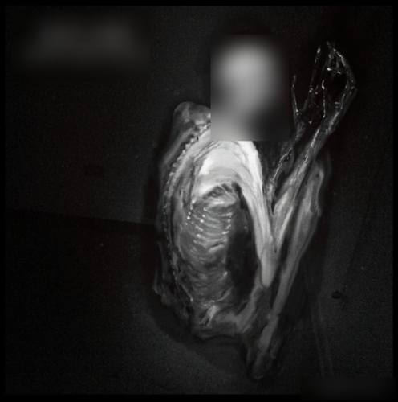

File Creation - 096
Item #: SCP-096
Object Class: Euclid
Containment Procedure: SCP-096 is to be contained within a 5m x 5m x 5m airtight steel enclosure at all times. The integrity of the containment cell must be inspected weekly for any potential breaches or structural weaknesses. The interior of SCP-096’s containment cell is to be devoid of any video surveillance equipment or optical devices. Monitoring of SCP-096’s presence within the cell is to be achieved using pre-installed pressure sensors and laser detectors.
All visual recordings, including photographs and videos, depicting SCP-096 are strictly prohibited without explicit authorization from Dr. ███ and O5-█.
Description: SCP-096 is a humanoid entity approximately 2.38 meters in height. The subject exhibits a significantly reduced muscle mass, with body mass analysis suggesting mild malnutrition. The entity’s arms are disproportionately elongated, measuring approximately 1.5 meters each. SCP-096’s skin is predominantly anemic, with no observable pigmentation or body hair.
SCP-096 possesses an unusually wide jaw capable of opening up to four times the normal human range. Other facial features are consistent with typical human morphology, albeit with the eyes also lacking pigmentation. The sensory capabilities of SCP-096 remain undetermined; it is currently unknown whether the entity is blind. SCP-096 exhibits no evidence of higher cognitive functions and is not classified as sapient.
Under normal conditions, SCP-096 is exceedingly docile. Internal pressure sensors report that SCP-096 typically spends the majority of its time pacing along the eastern wall of its containment cell. However, when SCP-096’s facial features are observed—whether directly, through video recording, or via photographic representation—the entity undergoes a state of acute emotional distress. This distress manifests as SCP-096 covering its face with its hands, and engaging in vocalizations that include screaming, crying, and incoherent babbling.
Approximately one to two minutes post-exposure, SCP-096 will enter a pursuit phase directed towards the individual who viewed its face (designated SCP-096-1). Documented velocities during this phase range from 35 km/h to ███ km/h, with speed correlating to the distance from SCP-096-1. SCP-096’s pursuit remains unaffected by any material barriers or distance, demonstrating an intrinsic tracking ability towards SCP-096-1. It should be noted that this response does not occur with artistic representations (refer to Document 096-1).
Upon reaching SCP-096-1, the entity will engage in a lethal attack and subsequent [DATA EXPUNGED]. To date, there have been no surviving traces of SCP-096-1. Following the attack, SCP-096 will return to a passive state, sitting for several minutes before resuming its docile behavior and attempting to return to its natural habitat (specific location redacted).
Given the potential for mass chain reactions, breaches of Foundation secrecy, and significant civilian casualties, retrieval operations of SCP-096 are classified as Alpha priority.
Dr. ███ has also advocated for the immediate termination of SCP-096 (refer to Interview 096-1). The termination order has been approved and is scheduled to be executed by Dr. ███ on [DATA REDACTED]. See Incident-096-1-A for details.
Deleted Footage - 04/23/████
Incident Report [REDACTED]:
Date: [REDACTED]
Location: Abandoned Building, [REDACTED]
Summary:
On [REDACTED], three college students, identified as [REDACTED], were exploring an abandoned building located in [REDACTED]. During their exploration, the students inadvertently came across SCP-096. The students, unaware of SCP-096’s properties, recorded footage which captured SCP-096’s face.
Following the exposure, SCP-096 entered its violent phase, characterized by extreme agitation and pursuit of the observers. The students were found deceased at the scene, having suffered severe injuries consistent with SCP-096’s known attack methods. The bodies exhibited extensive trauma and evidence of a violent struggle.
Mobile Task Forces were dispatched to the location and initiated containment procedures. Despite the severity of SCP-096’s aggressive response, the MTFs successfully subdued and captured SCP-096 using advanced containment protocols and specialized equipment. SCP-096 was then transported under high-security conditions to Site-██.
Notes:
Return to Files